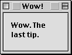
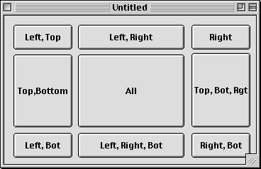

The Complete Compiled Tips
RB Monthly Volume 1 (6/98–5/99)
In RBM's first year, we've accumulated quite a few
tips. Twenty-One major tips, to be precise. And here they all are, in one document.
Enjoy!
Go To Tip: 1 2 3 4 5 6 7 8 9 10 11 12 13 14 15 16 17 18 19 20 21
Tip #1 - Assign shortcuts to New Property and Method
<obsolete>
One of the most silly things about Realbasic is that it doesn't have
keyboard shortcuts for New Property... and New Method... However, as everyone knows,
you can add them with ResEdit. Doing it is simple.
Method 1-A resource editor
Just open up Realbasic in ResEdit or the far superior Resourcer,
and open the Edit MENU resource. Then, add the shortcuts Cmd-Opt-V (V=Variable),
and Cmd-Opt-M. They will appear as an accent and a check mark, but that's OK. They
still work. The only problem with this is that every time you get a new version of
RB, you have to do this again.
Method 2-A macro utility
This is a better method because you don't have to modify RB every single
time you download it. Any macro utility will do for this, though I personally think
that OneClick leaves everything else in the dust. Simply make two new macros that
choose the two menu items, and assign them shortcuts. Since the Realbasic application
is always called "REALBasic", you won't have to create these again every
time you get a new version.
Method 3-Write mail to geoff@realbasic.com
Using this method, everyone writes mail to geoff@realbasic.com, and
requests that he include shortcuts built in.
Tip #2 - Save before you run macro
Realbasic crashes a lot. A heck of a lot. More than any other app
I've ever used. And it crashes in such interesting ways…
Anyway, the point of this is that since it crashes a lot, you should
save your work a lot. The problem with this is that it seems that just before it
crashes, the save command stops working (Arggh...). What seems to work for me is
simply holding down Command and S. This saves it many times, and almost entirely
ensures that it works. Once again, OneClick or another utility can simplify this
whole thing. In OneClick, just use this script:
Repeat 10
SelectMenu "File", "Save"
End Repeat
SelectMenu "Debug", "Run"
If you assign this to be Cmd-R, then it will do it whenever you use the keyboard
shortcut to run. This is a big time saver.
Tip #3 - How to use the Scroll Method
One of the more interesting changes in r36 was the addition of a Canvas.Scroll
method. Here's the syntax:
Scroll(deltaX as integer, deltaY as integer, left as integer, top as
integer, width as integer, height as integer, scrollControls as Boolean)
This method allows you to a canvas to scroll easily. Essentially, what
it does is to change the coordinates for the Canvas, i.e. the top left is -10, 5
instead of 0,0. More interesting than this is the scrollControls property.
The reference says that this determines whether or not controls on top of the canvas
scroll as well. To try this out, I whipped up a simple project that used the scroll
method. Screenshots can be found to your right.
The code for the scroll button at the right is this:
Canvas1.Scroll 100, 0
This one line hides all five controls over the canvas just as effectively
as uses five Control.Visible=False statements. If you had tried this with
a group box, it wouldn't have worked. This is an excellent way to group and move
controls, and it is also a good way to manipulate graphics. |


Before and After. The controls haven't been hidden,
they've just been scrolled off the right edge of the canvas that they're on. This
would've taken five lines of code normally, but with scroll, it's only one. |
Tip #4 - Don't restart, Interrupt!
One of the nastiest things about RB is how much it crashes, especially
with "Type 10" errors. It displays a black and white box that lets you
restart. However, if you can still move the mouse, then there is hope!!! Simply press
Command-Power (not Cmd-Ctrl-Power) to go into Interrupt mode (if you have MacBugs
installed, then you'll drop to that). A new window will come up with a greater than
sign. Simply type "G FINDER" to go back to the finder and quit RB without
restarting the whole computer. If it works, then save the rest of the stuff you have
open before opening RB again. This trick works for apps besides RB too.
Tip #5 - Use Confirm, and InputBox classes
RealBasic does have a MsgBox method, but it lacks some other
features that Visual Basic has built-in: A confirm function (This is integrated into
the MsgBox function in VB), and an InputBox function. Fortunately, with RB's great
class system, it's easy to make these on your own. Simply make two windows: One for
a confirm box (w/ a yes and no button), and one for an input box.
I could explain how to do this further, but I've decided to
spare you the boredom. If you downloaded this issue as a StuffIt archive, then you
already have these classes (in the Confirm and InputBox) folder. If you're viewing
this on the internet, click here
to download them as a binhexed file.
Tip #6 - Use StrComp
<obsolete as far as speed gains over "="
go in DR2r66>
In a recent message on the RB-NUG mailing list (What does NUG stand for anyway?),
someone pointed out that comparing two strings in an if statement is really very
slow. He also pointed out that by using the strcomp function, you could speed these
up several hundred times. Here's how it works…
| First of all, you need to learn what the StrComp function does. As its name implies,
it compares two strings. The value it returns tells you if the two strings are the
same, or if they're not, it tells you which one comes before the other in alphabetical
order. The handy table to the right may simplify things some. |
|
| s1 |
s2 |
StrComp(s1, s2, 0) |
| a |
z |
-1 |
| z |
a |
+1 |
| A |
a |
-1 |
| A |
A |
0 |
|
As you can see from the helpful table, if the two stringsare the same,
it returns 0. So, the statement
If s1=s2 then
is the same as
If StrComp(s1, s2, 0)=0 then
The strComp example may look longer and more complicated, but in reality,
it's a LOT faster.
If you don't want to get stuck typing StrComp for the rest of your life,
there IS a better solution. Just create a new method called "Equal" that
takes two strings as a parameter, and returns a boolean. Here's the code for it:
Function Equal(s1 as string, s2 as string) as boolean
if strcomp(s1, s2, 0)=0 then
return true
else
return false
end if
End Function
After you type in that function, you can use the format "If Equal(s1,
s2) then", which makes much more sense, and looks nicer. If you want to test
to see if two strings AREN'T equal, just replace that statement with "If Not
Equal(s1, s2) then".
Speeding up your program couldn't be easier!
Tip #7 — Declare items the quick way
In case you didn't already realize it, declaring variables used to
be a nightmare. First of all, you had to put them all on different lines, and they
all had to have an "as type" clause after them. This made for some icky,
and very long code.
Things eventually got better though. You can now declare multiple
variables on one line. However, there's still oen more trick that not many people
know about...
If you want to declare two or more variables of the same type, you can omit
the "as type" part. For example, dim s as string, t as string could
be rewritten as dim s, t as string. This is a very useful shortcut, especially
when there are many variables of the same type.
So, if you still aren't convinced, look at these three snapshots:
| Really old |
Dim m as folderitem
Dim n as folderitem
Dim o as folderitem
Dim p as folderitem |
| Current |
Dim m as folderitem, n as folderitem
Dim o as folderitem, p as folderitem |
| The Secret Way |
Dim m, n, o, p as folderitem |
As you can see from that lovely diagram, it's the biggest clarity
improving declaration change you can make. It also saves a bunch of typing, and you
won't have to scroll to see everything. So, be sure to use this trick whenever you
can!!!
Tip #8 - You can use special modifiers
If you've worked with menus for any amount of time, you know that
there are special modifier symbols for keys other than command. For example, if the
menu's keyboard shortcut was Cmd-Opt-Ctrl-Shft-Forward Delete, then that would be
written as  . Not that anyone would ever really do that, but that's how it
would appear if they did. Anyway, you might have though that you couldn't do things
like this in RB, because you could only write in a command key in the menu editor.
. Not that anyone would ever really do that, but that's how it
would appear if they did. Anyway, you might have though that you couldn't do things
like this in RB, because you could only write in a command key in the menu editor.
Think again. Actually, you can make a menu's command key look exactly
like that, except for the forward delete. You can add any modifier to a menu. How?
Simple.
First of all, select the menu item, and click on the CommandKey property.
Let's say you wanted it to be Command-Option-Shift-I. Well, to do that, you'd type
"Option-Shift-I" in the CommandKey slot, like so:
Now, when you run your program, the menu will have the command key
that you want it to.
This method has some problems though. As you probably noticed if you
tried this, the menu editor has some problems displaying these (they run past the
menu). Also, you can't set these while the program is running.
Tip #9 - Name your controls
Almost everybody who programs, whether it's in VB or RB usually leaves
the names of all controls as the default (i.e. Label1, StaticText1, PopupMenu1, etc.).
Though it's not a horrible thing to do in Visual Basic, you're really slowing yourself
down if you don't in Realbasic.
Why is there such a difference? RB's autocomplete feature in the code
editor! If all your controls are a long name followed by a number, it won't guess.
But if they're a three letter code followed by a name, then it can guess easily,
saving you tons of typing. It only helps if you plan to use the controls in
code though. You shouldn't bother naming a label that never changes.
Just follow this guide:
| Control |
Code |
Example |
| PushButton |
Btn |
BtnCancel |
| RadioButton |
Opt |
OptDoubleSpaced |
| Checkbox |
Chk |
ChkDontAsk |
| StaticText |
Lbl |
LblAmountTransfered |
| PopupMenu |
Pop |
PopSize |
| Timer |
Tmr |
TmrTicker |
| TabPanel |
Tab |
TabOptions |
Tip #10 - Close the toolbars
In general, you'll never use the color palette (though it is
super-nifty), and you'll only use the Tools and Properties toolbars when you're laying
out an interface. When you're writing code, these windows are pointless. However,
much to my dismay, many people simply never close these windows!
So, the tip is to keep these windows closed whenever you're not
doing layout. You'll get a lot more screen space, and RB will run faster (the properties
palette takes a long time to refresh).
To be even MORE super-effecient with your workspace, make a macro
that closes and opens all the toolbars with a single keystroke. <In
DR2, all of these have shortcuts, and close automatically in the code editor. However,
the close all keystroke is still a huge timesaver>
Tip #11 - Beautify your code
Many, many people give all their variables names that are entirely
lowercase, such as "sout, temp, i", and so on. Many more people don't leave
blank space in their code, and put comments at the end of lines without aligning
them. This is downright ugly!
So, when you're writing code, capitalize letters in variables that
are the start of words. For example, if the variable binval is a binary
value, name it BinVal. This just looks better.
And be sure to put in blank lines at points where the code is broken
into sections. This makes it much clearer, and easier to read. Take these examples...
The bad
All the declarations are on a long line, and are all in lower case.
There isn't any blank space, and the comments are randomly strewn about the line.
The good

The variables are logically grouped, and have the correct case. There
is blank space seperating the groups of code. The comments are lined up, and look
very nice.This makes going back and editing it later much easier, and it makes it
easier for others to read as well.
Tip #12—Use Control Binding
One of the coolest new features of the DR2 releases has been control
binding. This feature, which is available in DR2r24 and up, has been simplifying
my life quite a bit, and it should simplify your's too!
The idea behind control binding is that in many programs, clicking
on a button, or selecting an item in a list affects the appearance of another control.
For example, clicking the a button might start playing a movie, and clicking stop
might (logically enough), stop it.
 Normally,
this would involve writing some code—a whopping one line for each button. However,
as lazy developers, this is simply too much! Control binding aims to simplify this
oh-so-complex process.
Normally,
this would involve writing some code—a whopping one line for each button. However,
as lazy developers, this is simply too much! Control binding aims to simplify this
oh-so-complex process.
First off, we'll need to create three controls: One MoviePlayer, and
two PushButtons, so that your project looks something like the picture to the left.
This setup is fairly simple. If you've had any experience with the
movieplayer control, then you probably know how you could implement this. Open the
code editor, and put MoviePlayer1.Start in the Start button's Action event,
and MoviePlayer1.Stop in the Stop button's Action event. However, I have
a far more interesting way of doing this: one that doesn't even involve opening the
code editor!
First off, select the Start button. Next, hold down the Command and
Shift keys, and drag it onto the MoviePlayer control. A line will appear, and the
movieplayer will be hilighted with a blue border. Let go of the mouse button. This
dialog will (hopefully) appear:
Since
we want the first button to play the movie, select the first option in the list.
Next, do the exact same things for the stop button, except make it
stop the movie. When you choose OK, your window should like like the picture
to the right. If you drag a movie into the project, and set the movieplayer's Movie
property (in the properties window) to that movie, then you've got a complete project.
Simple, huh? And you didn't need to type a single line of code!
Personally, I think this is an extremely exciting addition. As more
and more bindings are made possible, this feature will become more and more useful.
Not only will it make life easier for beginners (at that point, the less code, the
better), but it'll make life much simpler for everyone. Now if there were only a
way to delete a binding...
Tip #13—Use Constants
A great new feature that many people have been asking for has finally
arrived: Constants. Constants are normally variables with a preset value. For example,
in Visual Basic, you'd define a constant by typing in Global Const PI=3.14159.
This would add a variable called PI that could be accessed from anywhere.
RB's version of this feature is more complicated, but much more powerful.
In this example, I'll show you how to use it to set the value of PI based on the
type of computer that the program is being run on. For Macs and Java machines, PI
will be 3.14159 (the right number). For Windows, the value will be 3.14112. (Much
thanks to the mailing list for this devious idea!)
First of all, we'll want to make a module. Constants can only exist
in modules, even though there's a "constants" section in classes too.
Open up the module, and choose "New Constant..." from the
Edit menu. You should see a screen that looks something like this:

As you can see, it's much more complicated than simply typing
a value for a variable!
First of all, type in "PI" in the name field. In the value
field, type 3.14159. You must give constants a value, or RB won't recognize them.
Now comes the fun part! Click the "Add..." button in the
lower left corner. The following dialog will appear:
From the platform menu, select "Macintosh". Then, type in
3.14159 in the Value field. Finally, click OK to add the type. You'll want to do
this for Java too.
Finally, add another constant, and select Windows from the platform
menu. In the Value field, type 3.14112. Click OK. Your Constants window should look
like this:

After you click OK, your constant has been added. From now on, you
can use it like a normal variable with the name PI throughout your code. However,
there's also a special way to use constants. On a PushButton, make the caption a
number sign (#) followed by the constant's name. The button caption will automatically
become whatever value that constant is!
Tip #14 - Never underestimate the Canvas control
In general, if someone needs a type of control that isn't available,
they go running to a plugin developer, or complain to Andrew (the author of RB).
This is very, very baaaadddd...
What's the right thing to do? In general, any interface control
can be rewritten as a subclass of the canvas! Already, people have made chart, table,
listbox, tabpanel, painting, vector-editing, and HTML displaying subclasses of a
canvas.
And as an added bonus, if you make it yourself, then you'll just feel
better about it.
Tip #15 - Use Method Overloading
Yes, yes, you're probably saying "OverLOADING"? What is
this guy talking about!? However, if you have one of the newer DR2 releases, you
can create multiple versions of a method with the same name that take different parameters.
For example, you could create a routine like this:
And then, make another routine like this:

Now, both Message "Hello" and Message 100 are valid
statements. You can also make routines with different numbers of parameters that
are in different orders, and that sort of thing too. Nifty, huh?
Tip #16 - Use ByRef Parameters
In DR2r37, a great new feature was added: the ByVal and ByRef keywords.
These keywords, whcih will be familiar to any VB user, allow you to control how a
parameter is passed to a method. Usually, this method would give you an error saying
that it's "expecting an lvalue":
Sub DoSomething(s as string)
s="Hello!"
End Sub
It gives you this error because you're not allowed to directly modify
a parameter. This is because they're passed by their value. RB has no idea which
variable s actually represents; it just knows its value. However, if we change the
routine to this:
Sub DoSomething(ByRef s as string)
s="Hello!"
End Sub
Then we don't get an error! S is now passed to DoSomething as a variable,
not a value (specifically, it's passed BY REFerence, thus ByRef). This means that
we can treat it like any normal variable, including changing its value.
ByVal is still the default, but ByRef is a welcome feature.
Tip #17 - Radio Buttons w/o frames
If you've ever worked with the RadioButton control, you know that
it's a major pain. Only one can be selected at once, unless you add ugly looking
frames to your window, like so:

However, this grouping system also works if the frames are invisible
(sort of like tab panels–see "Tabs, but no panels"). So, if we make both
of the frames invisible, we could make a nicer interface–like this:

Sure, your window may look ugly in the editor, but the finished work
is much nicer, and that's all that really matters.
Tip #18 — Flicker-free editfields
If you've ever made a program where text is constantly being added
to a text field (like in a chat program), you'll know just how much Edit fields flicker.
You may have thought it was unavoidable, but there is a trick!
Normally, to append something to an edit field, you'd use something like
this:
TxtChat.Text = TxtChat.Text + "Dan Vanderkam: RB Monthly rules!"
However, this would make the edit field flicker, especially if there
was more info above what was being added. There is a trick though. This is the code
for it:
TxtChat.SelStart = Len(TxtChat.Text)
TxtChat.SelText = "Dan Vanderkam: RB Monthly rules!"
This method, believe it or not, guarantees that almost NO flickering
takes place. And, as an added bonus, it scrolls down to the end of the text. Here's
what it does:
1) The first line moves the insertion point to the end (which is given
by the len function).
2) The second line adds the text at the insertion point.
So, it's two easy steps to flicker-free text. (Hey! That rhymes!)
Thanks to Ian L. for this one!
Tip #19 - Make a Help Menu
When
the Apple Guide (now Help) menu made its debut in System 7.5, it wasn't used by many
applications. However, it's caught on quite a bit since then, and many applications,
like Netscape, put a whole hord of items in that menu.Wouldn't it be nice if that
could be done in RB? Well, it can!
While creating release note summaries for DR1r4-DR1r35a (check out
RBM's new compilation page), I stumbled across a particularly interesting note in
DR1r23 (released on 11/11/97):
* Added new NotePlayer control (see new documentation)
* Added help menu support (create a menu called Help)
* Added new Resource fork object for accessing resources (see new documentation)
While the first and last notes seem rather funny now, the
middle one is something that most people (including myself) didn't know about. It's
fairly self-explanatory. As the screenshot shows, you create a menu called "Help",
and put various items in it. Then, put in any appropriate menu handlers and enablers,
and your application has commands in the actual Help/Apple Guide menu. Amazing!
Tip #20 - Dragging code onto controls
RB's code editor definitely supports drag and drop, but so
do its controls! At least pushbuttons do, anyway. In my continuing search for features
added in DR1 that everyone has forgotten about, I found that you can drag text from
the code editor on to a pushbutton! As this nice picture shows, it's quite
simple. This feature, believe it or not, has been around since DR1r35a! Even more
oddly, it has received absolutely no attention from REAL SW since then. Therefore,
it only works for pushbuttons, but it's still pretty neat, and occasionally saves
time.

Tip #21 - Write multiple lines in the IDE
As I mentioned in the news this month, DR2r70
sported a new button next to every string property that lets you type in a value
in a dialog identical to the "Edit List" one. Howevere, you don't need
r70 to do this.
In any version of RB, from DR1 on up, you can type
up some text in a word processor, like SimpleText, and copy them. Then, select the
property, and paste the text in. It can be as long as you want, and have as many
line breaks as you need. The window editor won't display it properly, but it looks
great when you run the program.

Tip #22 - Morph BevelButtons
The bevel button control can obviously be used as a button. However,
if you set its bevel property to something higher than 2, you can turn it into any
type of appearance manager control! These include group boxes, Spin buttons, flippy
triangles, and a whole lot more. Only a few are very useful, but here are all the
possible values:
| 0-2 |
Small, Medium, and Large bevelbuttons |
| 16 |
A slider with a left facing thumb. |
| 20 |
A slider with a right facing thumb. |
| 24 |
A slider with a rectangular thumb. |
| 32 |
A right facing flippy triangle. |
| 33 |
A left facing flippy triangle. |
| 48 |
A progressbar |
| 64 |
A spin button |
| 80 |
Spinning arrows |
| 96 |
A placard |
| 112 |
A seperator bar |
| 128 |
A groupbox |
| 129 |
A groupbox with a checkbox. Use the value property to check/uncheck it. |
| 217-8 |
Time controls. |
Tip #23 - Add Finder balloon help
 Nobody
has ever accused balloon help of being overused, but many programs (particularly
QuickTime) display some info when you move the mouse over their icon in the Finder.
Adding this type of your help isn't as simple as adding regular balloon help in RB,
but it's still not hard.
Nobody
has ever accused balloon help of being overused, but many programs (particularly
QuickTime) display some info when you move the mouse over their icon in the Finder.
Adding this type of your help isn't as simple as adding regular balloon help in RB,
but it's still not hard.
Just compile your program, and add an "hfdr" resource with an
ID of 18. Using a template such as Resorcerer's, you can make this resource contain
a string, point to a string elsewhere in the file, use styled text, or even contain
a picture!
Tip #24 - Put non-controls in a window
 In
2.x, you can put just about anything in a window–even a class that has nothing to
do with a control. Doing this makes it much easier for you to access the class's
properties and methods. And, as an added bonus, if you click the "Visible"
checkbox in the properties dialog, you can make the class's properties appear in
the properties window! Now if only that worked for control subclasses…
In
2.x, you can put just about anything in a window–even a class that has nothing to
do with a control. Doing this makes it much easier for you to access the class's
properties and methods. And, as an added bonus, if you click the "Visible"
checkbox in the properties dialog, you can make the class's properties appear in
the properties window! Now if only that worked for control subclasses…
Tip #25 - Draw a window
In 2.x, every window sports a new method: DrawInto. This method
takes three parameters: a graphics object, and an x and y coordinate. Using it, you
can draw the content of the window into a graphics object.
Tip #26 - Use Graphics Exporting
A new feature in 2.1 is the QTGraphicsExporter class. Using this,
you can easily save a picture object into a file using a variety of formats. And
unlike the ExportPicture function, they don't require you to show a save dialog (though
you can). To create a graphics exporter, use the GetQTGraphicsExporter function.
It takes a four letter string which corresponds to the type code of the file that
you want to save. For example, PICT is for PICT, JPEG is for JPEG, and so on. After
this, you can use the rest of the class's methods to manipulate the image, and eventually
save it:
- HasSettingsDialog As Boolean - True if a settings dialog exists for
the file format.
- RequestSettings As Boolean - When this method is called, the settings
dialog for the image type is shown. Returns true if the user clicks OK, false if
they click Cancel.
- DefaultExtension As String - The default extension for the file format
(ie, ".jpg")
- DesiredTargetDataSize As Integer - The size of the file when it's saved.
- CompressionQuality As Integer - How much to compress the image.
- OutputFileType As String - Four letter type code of the file.
- OutputFileCreator As String - Four letter creator code of the file.
- SavePicture(location As Folder, image As Picture) As Boolean - Saves
the picture to location. Returns true if it works.
Tip #27 - Put a placard behind a window
 Plain
document windows don't really look that great in OS 8. To spruce them up, many programs
put a placard at the back of the window to give it a beveled look. This is easy enough
to do in RB (see the screenshot), and it'll really improve the look of the window.
There is one problem though: it may not seem possible to select the
window itself (after all, there isn't any space that doesn't have a control). Fear
not though, simply click on a control, and then shift-click to deselect it. The window
is now editable from the properties window.
Tip #28 - Use LockLeft, LockRight, etc.
Making a window resize correctly is a pain.You have to manually write
code in the resize event to move and change the size of each control. Right? Nope!
All controls have four properties that will help you: LockLeft, LockRight, LockTop,
and LockBottom. How do they work? Pretty simple. This diagram should help. Left is
LockLeft, Right is LockRight, and so on. Bot stands for Bottom and Rgt stands for
right.

If we set the Lock properties as this window instructs us, all the
buttons will resize on their own.
What do the values stand for? They LOCK the distance from the edge
that you specify. For example, the bottom right button will always be the exact same
distance from the bottom edge and the right edge if its LockRight and LockBottom
properties are checked. What if LockTop and LockBottom are both checked? The control
will resize, just like the controls that aren't on corners do in this window. This
should save you a LOT of code, but if you stlill need to use the Resize event, remember
that controls with Lock properties checked are resized before Resized is fired.
Go To Tip: 1 2 3 4 5 6 7 8 9 10 11 12 13 14 15 16 17 18 19 20 21